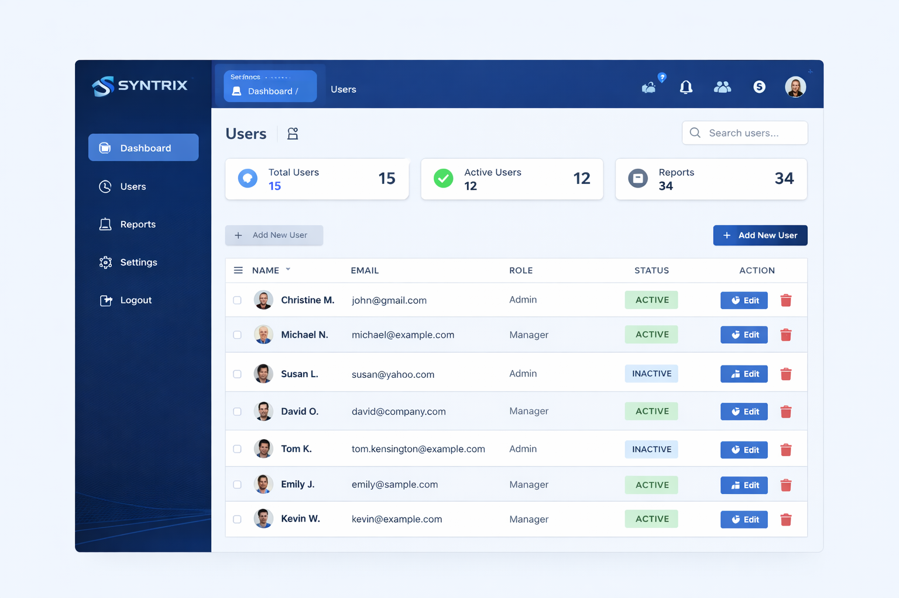

In progress
Betech Computers And Acc.
Ongoing technology project support focused on digital presence, ICT service visibility, and practical operational improvement.
These examples reflect the type of work Syntrix Technologies delivers: practical websites, management systems, reporting tools, infrastructure, support, and digital improvements that make operations easier to manage.
Ongoing technology project support focused on digital presence, ICT service visibility, and practical operational improvement.
Education-focused system work aimed at helping institutions organize school operations, records, users, and administrative workflows.
Syntrix continues to build projects that combine practical software, infrastructure planning, maintenance, and digital transformation support.
A KPI dashboard designed to centralize activity, service, and performance reporting that had previously been spread across multiple files and manual updates.

A structured internal system for managing records, users, roles, and recurring operational tasks with better control and accuracy than manual record-keeping.
Automation and process improvement work designed to reduce repetitive handoffs, improve information flow, and make technology environments easier to manage.